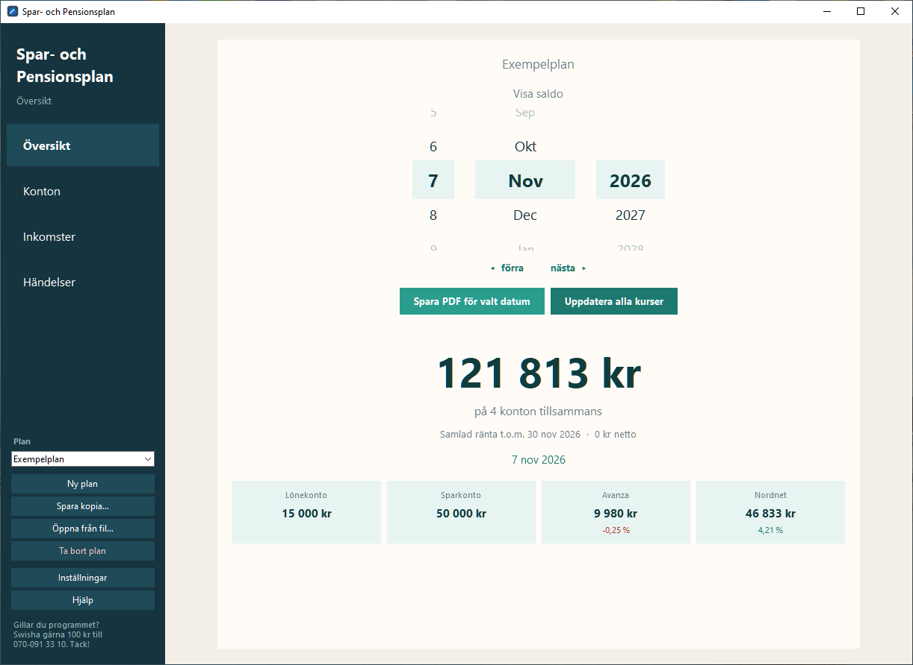
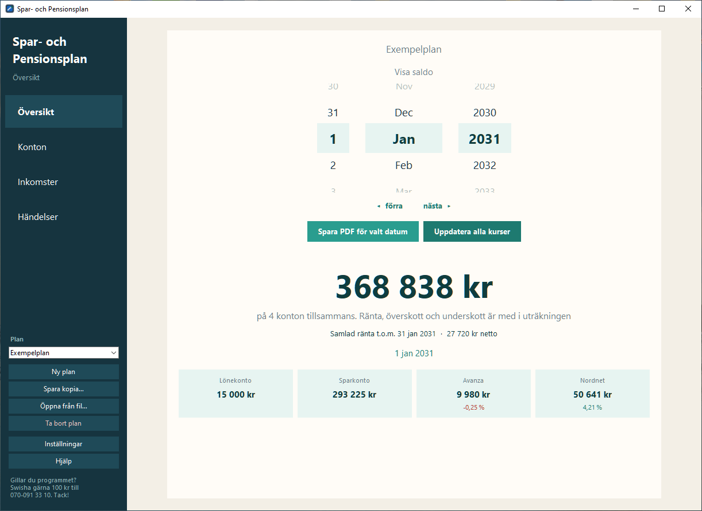
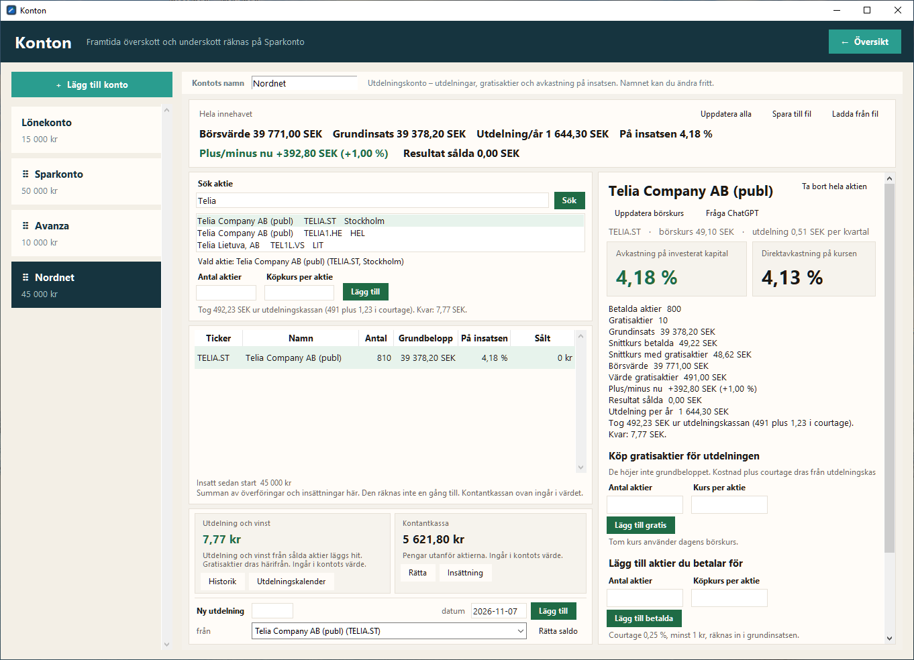
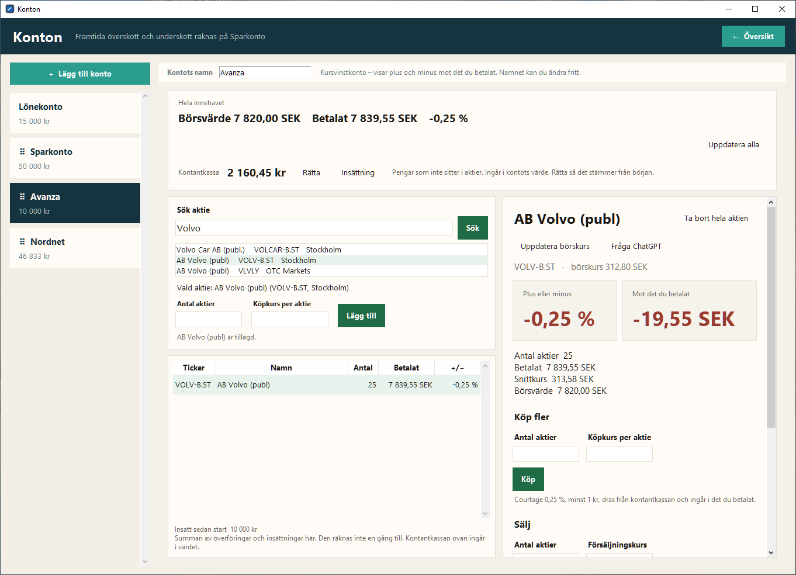
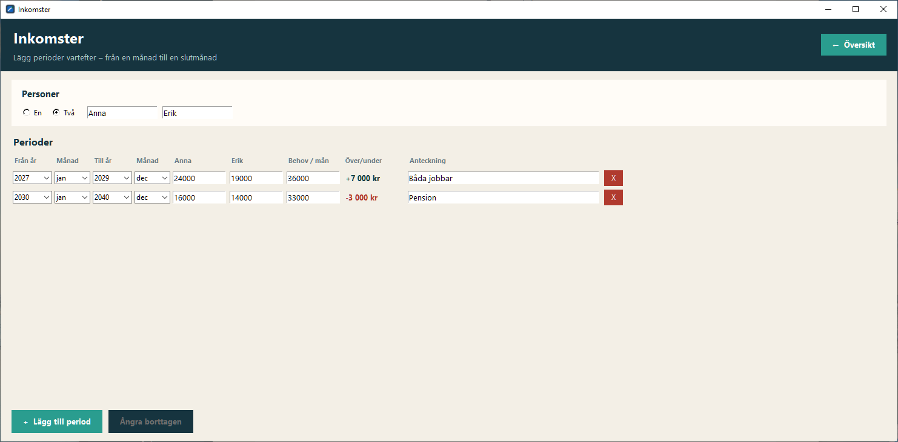
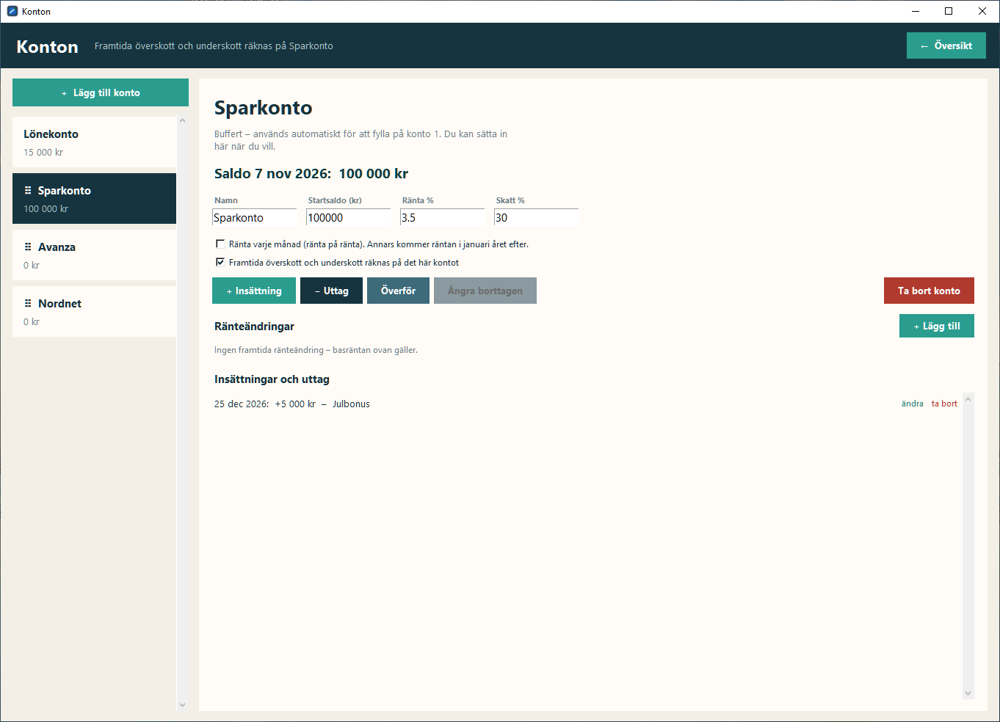

Ett enkelt program för sparande, pension och aktier. Lägg in dina konton, inkomster och utdelningar, och snurra fram till vilket datum du vill.
Version 1.0 · 25 MB · Windows 10 och 11 · Ingen reklam, inget konto, ingen kostnad

Programmet öppnas på dagens datum och visar det du har just nu. Vrid hjulen framåt så räknar programmet ut hur det ser ut då, med ränta, inkomster, utgifter och planerade händelser.
121 813 kr på fyra konton. Det här är vad som faktiskt finns i dag.

368 838 kr. Med ränta och månadens överskott eller underskott inräknat.
Byggt för vanligt folk som vill ha koll, utan kalkylblad och utan att logga in någonstans.
Lönekonto, sparkonton och fasta konton. Ränta varje månad eller en gång om året, med skatt.
Lön, pension och vad ni behöver per månad. Överskott och underskott hamnar på det konto du väljer.
Köp, sälj, registrera utdelningar och gratisaktier. Se avkastning på insatsen och resultatet av det du sålt.
Bonus, bilköp, resa eller överföring mellan konton. Lägg in det i förväg och se effekten.
Spara en snygg sammanställning av alla konton, i dag eller långt fram i tiden.
Allt sparas på din egen dator. Programmet är inte kopplat till någon bank och kräver ingen inloggning.

För dig som samlar på utdelningsaktier, till exempel på Nordnet.

För aktier där du mest bryr dig om hur kursen går, till exempel på Avanza.

Lägg in perioder, till exempel när båda jobbar och när ni går i pension. Programmet visar direkt om det blir över eller saknas varje månad.

Ränta, skatt, ränteändringar och planerade insättningar och uttag. Du bestämmer om räntan kommer varje månad eller en gång om året.
Det tar ett par minuter. Windows kommer troligen att varna en gång. Det är normalt för små gratisprogram, och längre ner står varför.
Klicka på Ladda ner gratis. Filen heter SparOchPensionsplan_Setup_1.0.exe och hamnar i mappen Hämtade filer.
Ibland frågar webbläsaren om du vill behålla filen, eftersom den inte laddas ner så ofta. I Edge klickar du på de tre prickarna och väljer Behåll, och sedan Visa mer och Behåll ändå.
Ungefär så här kan det se ut i webbläsaren.
Dubbelklicka på filen. Windows visar troligen en blå ruta som heter Windows skyddade datorn. Klicka på Mer info och sedan på Kör ändå.
Microsoft Defender SmartScreen förhindrade att en okänd app startades. Om du kör appen kan datorn utsättas för risker.
Mer infoMicrosoft Defender SmartScreen förhindrade att en okänd app startades. Om du kör appen kan datorn utsättas för risker.
App: SparOchPensionsplan_Setup_1.0.exe
Utgivare: Okänd utgivare
Ungefär så här ser rutan ut. Först Mer info, sedan Kör ändå.
Klicka Nästa några gånger och sedan Installera. Du kan välja att få en ikon på skrivbordet. Programmet behöver inget administratörslösenord och installeras bara för dig.
Första gången öppnas manualen automatiskt, och du får skapa din första plan. Manualen visar steg för steg med bilder hur du lägger in konton, inkomster och aktier. Den finns alltid under Hjälp i programmet.
Windows varnar för alla program som inte har en digital signatur från ett betalt certifikat och som ännu inte laddats ner av så många. Varningen betyder inte att Windows har hittat något farligt, bara att Windows inte känner igen programmet än.
Hittar du inte svaret här finns det mesta i manualen.
Nej. Programmet är helt gratis, utan reklam och utan konto. Gillar du det får du gärna swisha en slant, men det är frivilligt.
Nej. Du skriver själv in saldon, insättningar och aktier. Namnen Nordnet och Avanza är bara exempel, och du kan döpa kontona till vad du vill. Det enda programmet hämtar från internet är börskurser och aktienamn.
På din egen dator, i mappen där programmet är installerat. Ingenting skickas någonstans. Med Spara kopia… kan du göra en säkerhetskopia, till exempel på ett USB-minne.
När du tittar framåt i tiden räknar programmet med ränta, överskott och underskott. För dagens datum visas det du faktiskt har, så när räntan har kommit in på riktigt skriver du in den, en gång i månaden eller en gång om året beroende på konto.
Nej, bara på datorer med Windows 10 eller Windows 11.
Nej. Det är ett planeringsverktyg för att få överblick. Hur det går i framtiden beror på räntor, kurser och mycket annat som ingen kan veta säkert.
Öppna Inställningar → Appar i Windows, leta upp Spar- och Pensionsplan och välj Avinstallera.
Jag heter Magnus och gjorde programmet med hjälp av AI, för att hålla koll på vår egen ekonomi inför pensionen. Det blev så användbart att jag ville dela med mig.
Det finns ingen garanti och ingen support, men du får gärna testa.
Swisha gärna 100 kr till
Tack!
Ladda ner, lägg in dina konton och se hur det ser ut om fem, tio eller tjugo år.
Ladda ner Spar- och PensionsplanVersion 1.0 · 25 MB · Windows 10 och 11 · Så installerar du